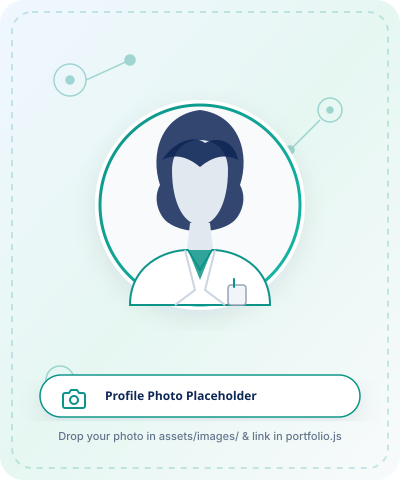

[HER FULL NAME]
Third-year undergraduate at the University of Sri Jayewardenepura studying Zoology, Microbiology, and Chemistry. Dedicated to scientific investigation, rigorous laboratory protocols, and advancing practical bench skills through hands-on internship opportunities.

About Me
Dedicated third-year undergraduate passionate about laboratory methodologies and biological sciences.
I am a third-year undergraduate at the University of Sri Jayewardenepura, studying Zoology, Microbiology, and Chemistry. Through my university laboratory practicals and academic projects, I have developed an interest in scientific investigation and laboratory work. I am eager to expand my practical knowledge, gain professional experience, and contribute to a scientific or laboratory team through an internship opportunity.
My tri-disciplinary curriculum provides a well-balanced scientific perspective bridging cellular microbiology, organismal biology, and chemical analytical protocols. In university laboratory sessions, I have prioritized meticulous experimental discipline, accurate record-keeping, and standard laboratory safety procedures.
Career Objective
To secure a challenging Microbiology or Laboratory internship where I can apply rigorous university laboratory training, enhance analytical and benchtop techniques, and contribute responsibly to experimental workflows and quality scientific investigation.
Education Timeline
Academic journey and verifiable educational credentials in Sri Lanka.
Laboratory & Technical Skills
Hands-on practical proficiencies developed through university lab coursework and academic projects.
Academic Projects
Coursework practicals and academic projects in Microbiology, Zoology, and Chemistry.
Laboratory Gallery
Visual highlights of laboratory instruments, microbiology workstations, and scientific practical setups.
Download Curriculum Vitae
Comprehensive academic summary, university laboratory practical details, subject combinations, and contact credentials prepared for internship recruiters.
Get In Touch
Reach out regarding microbiology, chemistry, or biological laboratory internship opportunities.
Prefer Direct Email?
Click below to launch your default email client with a pre-formatted internship subject line.
Open Default Mail ClientSend a Message
Please complete the form below. As this is a static frontend website, submitting will validate your inputs and prepare an email directly in your email client.